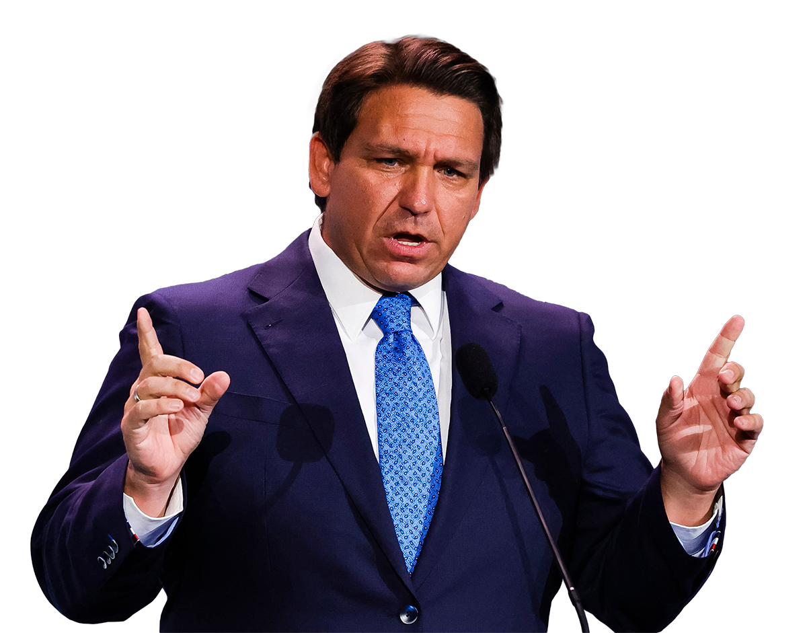

Modern education in the United States is at a crossroads.
As classrooms become increasingly aware of the multicultural and diverse backgrounds their students come from, an effort has been made to rise up and meet students where they are. Teachers utilize more recently introduced instructional methods, such as culturally-relevant pedagogy and socio-emotional learning, to make students feel comfortable, confident, and connected to the material they are learning, allowing students a glimpse into how their education can uplift them outside of the classroom setting. But even on a more basic level, education is also simply making an effort to teach more complete curriculums. Textbooks are revising inaccurate accounts of historical events, providing more context, and showing a wider range of perspectives, teaching students a more comprehensive understanding of history and helping foster critical thinking skills.
However, as the calls for diverse and well-rounded education have gotten louder, so too have the cries to defund such programs and for education to return to strictly rigorous academia and professional training. The backlash towards diversity-related issues in education is immense, and its traction has only been growing in recent years.
How much pressure has been put on this issue? Well….
- Alabama HB 391 (2021)
Trans Sports
- Arizona HB 2898 (2021)
Race and Gender Equality
- Arizona SB 1165 (2022)
Trans Sports
- Arizona HB 2439 (2022)
Parental and Public Review, Library Control
- Arizona HB 2161 (2022)
Parental Review
- Arkansas AB 354 (2021)
Trans Sports
- Arkansas SB 294 (2023)
Race and Gender Equality, Race Education, Queer Education
- Arkansas SB 81 (2023)
Library Control, Parental Review
- Florida SB 1028 (2021)
Trans Sports
- Florida HB 1467 (2022)
Library Control
- Florida HB 1557, a.k.a. “Don’t Say Gay” (2022)
Queer Education, Parental Review
- Florida HB 7, a.k.a. Stop WOKE Act (2022)
Race and Gender Equality
- Georgia SB 226 (2022)
Library Control, Parental Review
- Georgia HB 1084 (2022)
Race Education
- Idaho SB 500 (2020)
Trans Sports
- Idaho HB 377 (2021)
Race and Gender Equality
- Idaho HB 314 (2023)
Library Control
- Indiana HB 1041 (2022)
Trans Sports
- Indiana HB 1447 (2023)
Library Control, Parental and Public Review
- Iowa HF 802 (2021)
Race and Gender Equality
- Iowa HF 2416 (2022)
Trans Sports
- Kansas SB 55 (2021)
Trans Sports
- Kansas SB 160 (2022)
Trans Sports
- Kansas HB 2238 (2023)
Trans Sports
- Kentucky SB 1 (2022)
Race and Gender Equality, School Activism
- Kentucky SB 83 (2022)
Trans Sports
- Kentucky SB 5 (2023)
Parental Review
- Lousiana SB 44 (2022)
Trans Sports
- Mississippi SB 2536 (2021)
Trans Sports
- Mississippi SB 2113 (2022)
Race and Gender Equality
- Mississippi HB 1315 (2023)
Library Control
- Missouri SB 775 (2022)
Library Control
- Montana HB 112 (2021)
Trans Sports
- Montana HB 234 (2023)
Library Control
- Montana HB 359 (2023)
Library Control
- New Hampshire HB 2 (2021)
Race and Gender Equality
- North Carolina HB 324 (2021)
Race and Gender Equality
- North Dakota HB 1508 (2021)
Race Education
- North Dakota HB 1298 (2021)
Trans Sports
- North Dakota HB 1249 (2023)
Trans Sports
- North Dakota HB 1489 (2023)
Trans Sports
- North Dakota SB 2360 (2023)
Library Control
- North Dakota SB 2247 (2023)
Race and Gender Equality
- Oklahoma HB 1775 (2021)
Race and Gender Equality, Queer Education
- Oklahoma SB 2 (2022)
Trans Sports
- Oklahoma HB 3702 (2022)
Library Control
- Pennsylvania HB 972 (2021)
Trans Sports
- South Carolina B 4100 (2021)
Race and Gender Equality
- South Carolina HB 4608 (2022)
Trans Sports
- South Dakota HB 1012 (2022)
Race and Gender Equality
- South Dakota SB 46 (2022)
Trans Sports
- Tennessee SB 623 (2021)
Race and Gender Equality
- Tennessee SB 228 (2021)
Trans Sports
- Tennessee SB 2292 (2022)
Library Control, Parental Review
- Tennessee SB 2153 (2022)
Trans Sports
- Tennessee HB 2670 (2022)
Race and Gender Equality
- Tennessee HB 1895 (2022)
Trans Sports
- Tennessee SB 1059 (2023)
Library Control
- Tennessee HB 1376 (2023)
Race and Gender Equality
- Texas SB 3 (2021)
Race and Gender Equality, Race Education, Parental Review, School Activism
- Texas HB 25 (2021)
Trans Sports
- Utah HB 38 (2021)
Library Control
- Utah HB 374 (2022)
Library Control
- Utah HB 11 (2022)
Trans Sports
- Utah SB 55 (2023)
Public Review
- Utah HB 465 (2023)
Parental Review
- Utah HB 427 (2023)
Race and Gender Equality, School Prayer
- Virginia SB 656 (2022)
Parental Review
- West Virginia HB 3293 (2021)
Trans Sports
- Wisconsin AB 411 (2022)
Race and Gender Equality, Library Control
- Wyoming SF 133 (2023)
Trans Sports
Since 2020, over 60 state school laws have been passed regarding education as it pertains to race, gender, or queerness in the US. Nineteen from this year alone.1 Scrolling past all of those should give you a sense of the magnitude of, what has been described as,
“The War on Woke.”
In research conducted by the Pew Research Center in 2023, they found that 61% of Republicans and Republican-leaning individuals believe that current K-12 education is having a negative effect on the US, a percentage which has been steadily growing since the 2020 pandemic. In polls and surveys conducted by the same organization, school curriculum and the influence of state government and local school boards on said curriculum played a role in this dissatisfaction.2
The War on Woke is the response of these discontented individuals against how education is currently being handled in public institutions.
To them, the current state of education is failing them in three key ways.
-
It is distracting from the core role of education
-
It is indoctrinating students with anti-American values
-
It is infringing on parental rights relating to education
In this webpage, I will identify the major themes in their arguments regarding how public education has failed students and parents, how they wish to change the system, and the goals they wish to achieve through this change, while providing additional context and identifying how these points may fall short even by their own stated criteria. That, by how they define who should decide what should be taught in schools, what the role of education is for a country, and what an effective education is, a lack of equity and intersectionality causes them to fail in their stated educational goals.
What role does education play in American society?
One of the major players in the War on Woke is Florida Governor Ron DeSantis. The man behind the notorious Stop WOKE Act, defining WOKE as “Wrongs to Our Kids and Employees,” DeSantis has been a major proponent for restructuring education in a manner which he feels will better serve the US.
For his own restructuring of education in Florida, DeSantis stresses the importance of curriculum being “foundational” and “historically accurate.” 3 In regards to his vision for what this entailed, DeSantis' then-Commissioner of Education, Richard Corcoran, has highlighted goals such as “elevat[ing] our students into lifelong learners and great citizens,” as well as “providing access to higher quality acceleration and career pathways courses.”4
From these bills and statements, we can glean that the majority conservative opinion believes that the role of education is to prepare students to be good citizens and to empower them in joining the workforce and continuing to learn as they progress through life. Furthermore, it is through accurate and career-relevant curriculum that education can accomplish these goals.
These goals play a large role in why conservatives believe that current public institutions fail to deliver effective education.
In April of 2022, the Florida Department of Education rejected 41% of new math textbooks for use in Florida public schools, by citing the inclusion of concepts such as socio-emotional learning. In a press conference regarding the decision, DeSantis stated, “Math is about getting the right answer. It’s not about how you feel about the problem or to introduce some of these other things” because these other concepts “take our eye off the ball.”5 In May of 2023, when DeSantis signed in a law banning state funding for DEI, he went on to say that he feels that current higher education is not serving “the classical mission of what a university is supposed to be” by focusing too much on issues of diversity. By this mindset, education is bogged down by contextualizing itself in the world at large, and school subjects should remain separate from any “ideological agenda,” i.e. remain value-neutral.6
By not remaining value-neutral, current initiatives for curriculum that acknowledges diversity in the American population and the world at large are thus seen as indoctrinating their students.
In 2019, then-president Trump claimed there was an effort to “indoctrinate our students with left-wing ideology,”7 and now, in 2023, Florida governor DeSantis has proposed a higher education reform in Florida which aims for “education, not indoctrination.”3 In a 2023 Florida Daily article, conservative commentator Benjamin Weingarten writes that “schools – where our children spend much of their waking hours – …have disproportionate influence over American society,” and that it is for this reason that “Wokeness antithetical to the values and principles of [red states’] constituents” must be “purged” from public institutions.8 Schools are thus seen as not only distracting from the task at hand, but also actively working against the goal of preparing good citizens.
However, when we look more closely at the criteria Republicans have laid out for an effective education, we can identify flaws in their logic and self-contradictions by their own standards.
Preparation of a good citizen
In Florida’s House Bill 5, elaboration is provided regarding how schools should prepare students to be good citizens. The bill requires schools to instill a “responsibility for preserving and defending the blessings of liberty inherited from prior generations and secured by the United States Constitution,” and, in service of this, must “include a comparative discussion of political ideologies, such as communism and totalitarianism, that conflict with the principles of freedom and democracy essential to the founding principles of the United States.”9 In these requirements is an admission that an understanding of multiple viewpoints, including and especially viewpoints that run contrary to the ones the state deems patriotic and acceptable, to be crucial to the breeding of a good citizen. Regardless of whether or not the Floridian government considers “gender ideology” and adjacent topics to be antithetical to American values, under their own stated requirements, the teaching of such topics has value to a properly educated citizenry.
Additionally, by banning topics such as AP African American History under the guise of the course teaching identity politics, the state curriculum fails to fully educate its students on “the blessings of liberty inherited from prior generations,” secured in events such as the Civil Rights Movement.
By completely banning the discussion of topics related to race, gender, and sexuality in schools, the Florida Department of Education not only contradicts the importance they place in understanding differing viewpoints, but also actively engages in the “suppress[ion] or distort[ion of] significant historical events,” which it deems inappropriate by its educational standards.3
Provide foundational and career-relevant curriculum
When DeSantis signed the Stop WOKE Act in 2022, courses specifically engaging with subjects relating to identity were naturally affected. CollegeBoard’s AP African American History course was outright banned and deemed to be of “no educational value” by the passing of the act. 10
However, courses such as AP Psychology were also affected despite not being directly targeted in the same manner. CollegeBoard said that “Florida Department of Education has effectively banned AP Psychology” due to the "Parental Rights in Education" bill, which made the teaching of topics regarding sexual orientation and gender identity to be illegal, with DeSantis going so far as to say, “It's not something that's appropriate for any place, but especially not in Florida." The committee governing the course affirmed that “gender and sexual orientation are essential, longstanding, and foundational topics in the study of psychology” and that such topics could not be divorced from the field without comprising the educational value of the course. 11
By not acknowledging how separate educational subjects can be impacted by other subjects, Florida compromised the integrity of its curriculum and as a result, shortchanged students who were thus unable to prepare themselves for a career in the field of psychology.
The same can be said for mathematics, as per the many math textbooks discarded for contaminating the allegedly objective subject with subjective values that distracted from its core academics.
Math is used to contextualize the world around us, describing whatever humans decide to quantify. Thus, math is always contextualized in the surrounding world, whether it be in the constant representing the force of gravity or the ever-changing gas prices of our modern world. This grounding in the real world is the core basis of so many statistics classes, which often prompt students to consider not just the numbers, but the context surrounding them. Data is never considered as existing in a vacuum, and students must be confronted with how the data was collected, for what purpose it was collected, and for what goals it is being displayed and in what manner. Despite how DeSantis states, “There’s a right answer and there’s a wrong answer,” to consider math as such is to ignore how these mathematical concepts are applied outside the classroom, ill preparing students for careers in fields such as finance, business analysis, data engineering, and so much more.5
In many cases, it is fundamentally impossible to separate subjects and present them in a value-neutral manner because most aspects of life are contextualized within our political landscape. When conservatives describe value-neutral topics, they simply mean topics presented with values they are comfortable with, to the exclusion of the many minority groups and their allies who do not share such values.
American Values versus Indoctrination
The last point we must tackle is the accusation of indoctrination and the belief that diversity-uplifting values are antithetical to American patriotism.
This point we will tackle alongside the claim that the teaching of such subjects infringes upon parental rights as they relate to education.
When it comes down to it, many of the issues conservatives take with the current education system are purely ideological, predicated on a fundamentally different set of values than those who believe DEI initiatives belong in schools. However, because ideological differences are ideological, arguments based purely on a moral standpoint often fall flat. Thus conservatives enjoy turning to the legal standpoint of parental rights, asserting that they as parents have a right to not let their children be taught material they disagree with on a religious or moral basis.
So how are these rights codified as rights in the United States?
Are parental rights a topic in the US Constitution?
No, parental rights are not explicitly mentioned within the US Constitution. However, protections relating to parental rights have been established through interpretation of the Constitution in Supreme Court cases.
Is there Supreme Court precedent regarding the right to raise children as parents choose?
Yes. In 1923, Nebraska held a law “forbidding, under penalty, the teaching in any private, denominational, parochial or public school, of any modern language, other than English, to any child who has not attained and successfully passed the eighth grade.” This law was passed amidst an environment which believed teaching foreign languages to children would breed sentiment foreign to the interests of the United States and thus run contrary to the interests of the state and country.
In the case Meyer v. Nebraska, the Supreme Court ruled this law as unconstitutional, on the basis that such a law violated the Due Process Clause of the Fourteenth Amendment, which guarantees liberty; a protection which, in this ruling, was understood to extend to a parent’s right to “bring up children” how they so choose. The Supreme Court stated that the law was an “unwarranted restriction” which “arbitrarily interferes with the rights” of “all citizens of the state” as a “restriction of no real consequence.” The Court also affirmed that liberty is “not merely freedom from bodily restraint, but also the right of the individual to contract, to engage in any of the common occupations of life, to acquire useful knowledge, to marry, establish a home and bring up children, to worship God according to the dictates of his own conscience, and generally to enjoy those privileges long recognized at common law as essential to the orderly pursuit of happiness by free men.” 12
Thus, while there is Supreme Court precedent affirming a parent’s right to raise their children with the education they see fit, this very same precedent is also a case of a state restricting topics of education and the Supreme Court viewing this restriction as unconstitutional, instead affirming that liberty protects the freedom to “acquire useful knowledge.” This case thus affirms that a parent equally has the right for their children to be taught subjects relating to race, gender, and sexuality, and that state governments with bills banning the teaching of such topics are thus the actual actors infringing upon parental rights.
Is there a Supreme Court precedent regarding a parent’s right to choose alternative forms of schooling for their children?
Yes. In 1971, Wisconsin held a law requiring “a child's school attendance until age 16.” Members of the Old Order Amish religion and the Conservative Amish Mennonite Church challenged this law, refusing to send their children to private or public schools past the eighth grade on the grounds that “high school attendance was contrary to the Amish religion and way of life.”
In the case Wisconsin v. Yoder, the Supreme Court ruled Wisconsin’s compulsory school attendance law as unconstitutional, on the basis that the law violated “the Free Exercise Clause of the First Amendment and the traditional interest of parents with respect to the religious upbringing of their children.” The Supreme Court stated that this decision was supported by the defendants “demonstrating the adequacy of their alternative mode of continuing informal vocational education in terms of the overall interest that the State relies on in support of its program of compulsory high school education.”
Thus, while there is Supreme Court precedent affirming a parent’s right to school choice per personal belief, this very same precedent also affirms that alternative forms of schooling have a responsibility to “demonstrate [their] adequacy… in terms of the overall interest that the State relies on in support of its program of compulsory high school education.”13
Is there a Supreme Court precedent regarding parental rights as they relate to governmental interference?
Yes. In 1944, Prince v. Massachusetts saw the case of a guardian sending their child to distribute religious papers on the street, with the guardian arguing that by her religious freedom, she was allowed to instruct the child to do so. The Supreme Court ruled that religious freedom did not allow Prince to instruct her child in such a manner, stating that “The right to practice religion freely does not include the right to expose the community or the child to communicable disease or the latter to ill-health or death.” The Court affirmed that “the power of the state to control the conduct of children reaches beyond the scope of its authority over adults” and as it was in “the interests of society to protect the welfare of children,” it was invalid to leverage religion when it endangered a child or the community around them.14
Additionally, in the 1905 common law case Wadleigh v. Newhall, a couple attempted to regain custody of their children by pleading that the state overstepped its power and deprived them of their Fourteenth Amendment liberties by taking away their children and attempting to “corrupt and destroy the morals of the said child[ren].” The courts then ruled that “there is no parental authority independent of the supreme power of the state” and that “government is obligated by its duty of protection consult the welfare, comfort, and interests of such child” even when running contrary to parental interests. 15
Thus, while the above cases affirm a parents’ right to educate their children how they so please, their right to do so is still regulated by the government in so far as how their teaching and parenting may affect the welfare of their children and the community around them. This precedent thus supports the constitutionality of allowing children to learn things in their best interest despite potential parental protest and additionally, affirms that religion and personal belief do not excuse the teaching of material that is actively harmful to a child and their surrounding community.
-
So, conservatives claim that public education has failed students and parents. They describe how education should serve to educate good citizens and prepare them for the workforce, but pass laws that hinder the comprehensiveness of education by their own standards and as a result, do not fully prepare their students for working in the world at large. They claim that parental rights are being infringed upon as their children are being taught values and topics they don’t agree with, but the very cases that codify their parental rights disagree with banning topics in school and support the government’s right to teach their children subjects contrary to their beliefs if it is in the interest of public welfare. While the issue of who should decide what should be taught in school is still debated on purely moral standpoints, by the legal and logical groundwork conservatives have laid out, they have still failed to restructure education in a way that succeeds by their own metrics.
When a world is multicultural and diverse, intersectionality is a cornerstone of education, no matter how you slice the cake. An education without it will always be incomplete.
And that is a fact.
Facts don’t care about your feelings.
People can’t change how the world exists around them, no matter how afraid they are to acknowledge its existence.
/s/ Marcus Eng, December 9, 2023
Works Cited
Alice Markham-Cantor, Britina Cheng, and Paula Aceves (2023) “28 States, 71 Bills, and an Education System Transformed A running tally of how Republicans are remaking the American classroom.” New York Magazine.https://nymag.com/intelligencer/2023/05/us-education-state-school-laws.html ↑
Hatfield, Jenn (2023). "Partisan divides over K-12 education in 8 charts." Pew Research Center. https://www.pewresearch.org/short-reads/2023/06/05/partisan-divides-over-k-12-education-in-8-charts/ ↑
(2023). "Governor DeSantis Elevates Civil Discourse and Intellectual Freedom in Higher Education." Florida Government. https://www.flgov.com/2023/01/31/governor-desantis-elevates-civil-discourse-and-intellectual-freedom-in-higher-education/ ↑ ↑ ↑
(2020). "Governor Ron DeSantis Proves Once Again Florida is the Education State." Florida Department of Education. https://www.fldoe.org/newsroom/latest-news/governor-ron-desantis-proves-once-again-florida-is-the-education-state.stml ↑
Algar, Selim (2022). “DeSantis wants to keep ‘feelings’ out of math instruction in Florida schools.” New York Post. https://nypost.com/2022/04/18/desantis-wants-to-keep-feelings-out-of-math-instruction-in-florida-schools/ ↑ ↑
Cinea, Fabiol (2023). "Florida has launched an “unparalleled” assault on higher education." Vox. https://www.vox.com/policy/2023/6/2/23742508/ron-desantis-florida-higher-education-ideological-war/ ↑
Goldstein, Dana (2020). "Two States. Eight Textbooks. Two American Stories." New York Times. https://www.nytimes.com/interactive/2020/01/12/us/texas-vs-california-history-textbooks.html ↑
Weingarten, Benjamin (2023). "Benjamin Weingarten Opinion: Can the Right Make a Long Countermarch Through the Institutions?" Florida Daily. https://www.floridadaily.com/benjamin-weingarten-opinion-can-the-right-make-a-long-countermarch-through-the-institutions/ ↑
Florida Senate. House. Civic Education Curriculum. HR 5. Introduced in House April 1, 2021. https://www.flsenate.gov/Session/Bill/2021/5/BillText/er/PDF ↑
Contorno, Steve (2023)."DeSantis administration rejects proposed AP African American Studies class in Florida high schools." CNN. https://www.cnn.com/2023/01/19/politics/ron-desantis-ap-african-american-studies/index.html ↑
CollegeBoard (2023). "Statement on AP Psychology and Florida." https://newsroom.collegeboard.org/statement-ap-psychology-and-florida ↑
"Meyer v. State of Nebraska." Oyez, www.oyez.org/cases/1900-1940/262us390. Accessed 8 Dec. 2023. ↑
"Wisconsin v. Yoder." Oyez. Accessed December 8, 2023. https://www.oyez.org/cases/1971/70-110. ↑
"Prince v. Massachusetts." Justia. Accessed December 8, 2023. https://supreme.justia.com/cases/federal/us/321/158/ ↑
"Wadleigh v. Newhall." CaseText. Accessed December 8, 2023. https://casetext.com/case/wadleigh-v-newhall ↑